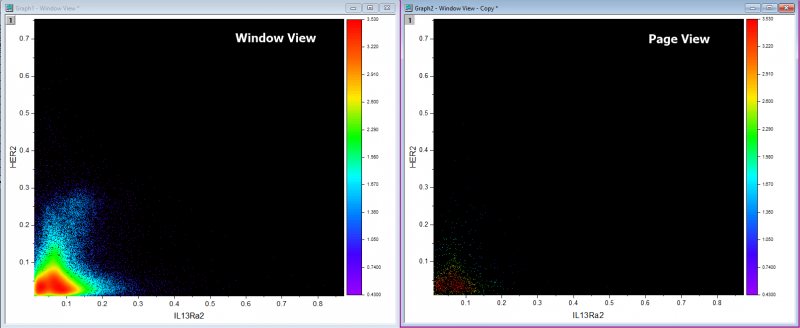

FAQ-1021 Wie erstelle ich ein Punktdiagramm und wende das Aussehen einer Heatmap an, basierend auf der Punktdichte?
RichText-for-WksHeader
Letztes Update: 17.01.2020
Wenn Sie über XY-Daten verfügen und ein Punktdiagramm mit Punkten erstellen möchten, dessen Punkte gemäß ihrer lokalen Dichte gefärbt sind, können Sie die XY-Spalten markieren und im Menü Zeichnen: Einfache 2D: Dichtepunkte wählen, um die Zeichnung zu erstellen.
Origin-Version mind. erforderlich: Origin 2020
Probleme der Diagrammanzeige im Modus der Seitenansicht
Das Diagramm ist standardmäßig nach dem Zeichnen im Modus Fensteransicht. Die Symbolgröße wird automatisch auf 0 gesetzt, um die Zeichengeschwindigkeit zu verbessern. Wenn Sie das Diagramm im Dialog Details Zeichnung jetzt in der Seitenansicht anzeigen, sieht sie sehr unterschiedlich aus (siehe unten). Um dieses Problem zu beheben und die Anzeige im Modus Seitenansicht wiederherzustellen, können Sie die Symbolgröße einfach auf 1 erhöhen.

 |
Wenn das Dichtepunktdiagramm in eine Bilddatei exportiert oder in Word kopiert/eingefügt wird, wird die Symbolgröße aus Gründen der Anzeigekonsistenz erneut angepasst. Die Bedingungen dafür, dass das Diagramm ordnungsgemäß erzeugt wird, sind folgende:
- Die Diagrammseite sollte sich im Modus Fensteransicht befinden.
- Es gibt nur einen Layer für das Diagramm. Wenn es mehr als einen Layer gibt, müssen andere Layer die gleiche Fläche mit dem ersten Layer teilen.
- Es gibt mindestens ein Punktdiagramm in der Grafik. Punktdiagramm meint hier (a) Symbol ist ein gefülltes Quadrat. (b) Symbolgröße ist null.
|
Schlüsselwörter: Dichte, Heatmap, Seitenansicht, Fensteransicht, Farbabbildung